About
近年高まるトレーラーハウス需要に応えるため、安全性と合法性を確保しつつ普及を進めることを目的に設立されました。
トレーラーハウスは、住まいや宿泊施設、さらには災害時の仮設住宅など多様な活用が期待される一方、 設置や運用にあたっては安全面や法令遵守が欠かせません。
私たちは、県内におけるトレーラーハウスの設置を適正に指導・管理するため、独自の設置基準を設け、 その周知徹底に努めています。また、関連法規や最新情報を収集・整理し、 利用者や事業者に分かりやすく提供することで、安心できる環境を整えています。
当協会が目指すのは、単なる普及ではありません。 「安心・安全・正しい知識に基づく新しい住まいの文化」を沖縄から築き上げることです。 自然豊かな地域性を生かしながら、持続可能で安心できるトレーラーハウスの普及を推進してまいります。
What is it
日本建築行政会議において「車両を利用した工作物」と定義されています。 一般的な建築物とは異なり、随時かつ任意に移動できることが前提です。
設置や運用の方法も、その特性に基づいた取り扱いが必要となります。 近年、県内ではトレーラーハウスを活用した宿泊施設やグランピング施設が広がりを見せ、 観光産業の新たな形として注目されています。さらに住宅や事務所、店舗といった多様な用途への需要も高まり、 従来の建物にはない柔軟性を活かした活用が進んでいます。
当協会では、この「車両を利用した工作物」という定義に基づき、 「随時かつ任意に移動できること」を設置条件とし、法令や行政通知に準拠した正しい取り扱いを推進しています。 具体的には、建設省住指発第170号（平成9年3月31日）に示された基準をもとに、 県内でのトレーラーハウス設置が適正かつ安全に行われるよう、指導と情報提供に努めています。
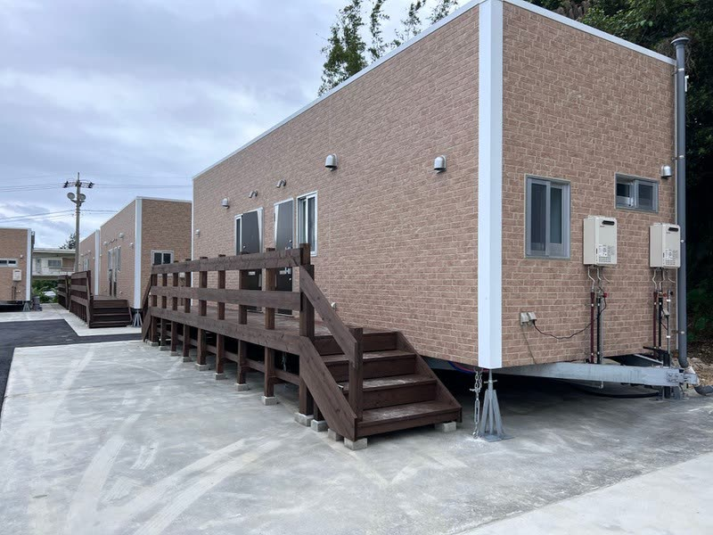
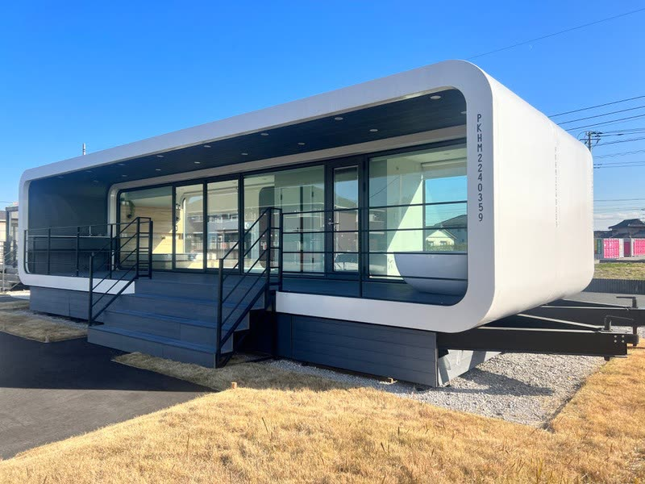
Regulations
建築基準法上の取扱いと、公道を移動するための要件。この2つを満たすことが前提になります。
車幅 2,500mm 未満 ／ 車高 3,800mm 未満 ／ 全長 12,000mm 未満
沖縄県トレーラーハウス協会では「随時かつ任意に移動できる」状態での設置指導を行っております。
万一、その状態が維持されていない車両を確認した場合は、当協会で指導し、改善に努めております。
建築基準法上の取扱いについては曖昧な状況もあり、市町村によって見解も違うようです。
沖縄県トレーラーハウス協会では、建設省住指発第170号（平成9年3月31日） 「トレーラーハウスの建築基準法上の取扱いについて」を基準に取扱いをするものとし、トレーラーハウスの普及に努めます。
トレーラーハウスは設置状況（ライフライン等、固定された配管・配線であるか）等、 検査13項目を基準として判断し、かつ任意に移動できるものは 建築基準法第2条第1号に規定する建築物には該当しないものとして取扱います。 適正に設置・運搬をすれば、建築物として該当しません。
Checklist
当協会は、以下の13項目を基準として「随時かつ任意に移動できる」状態かどうかを判断します。 設置をご検討の際は、事前にご確認ください。
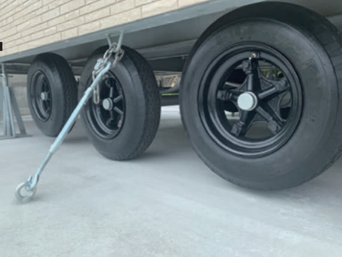
車両より、車軸が取り外されていないこと
公道を走行するために基準緩和認定または車検を受けていること
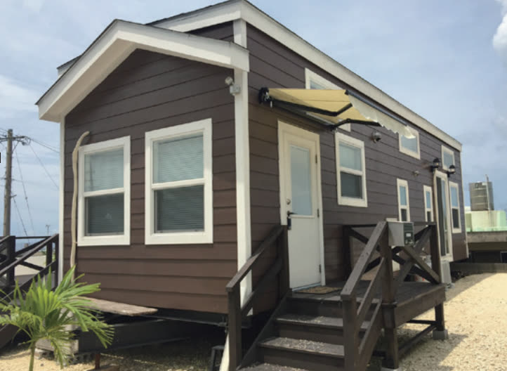
トレーラーハウスの進行方向に固定された障害物がないこと
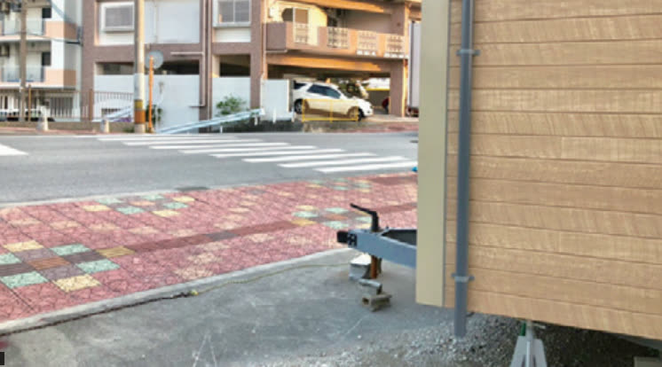
設置場所から公道に至る通路が常時確保されていること
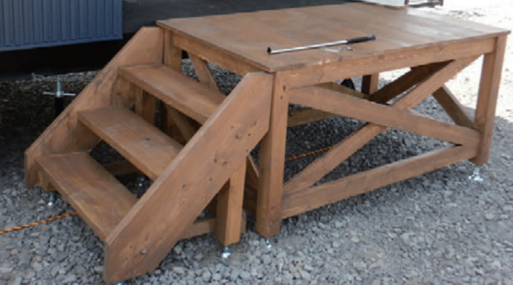
階段、デッキ、ポーチ等が独立した構造体であること
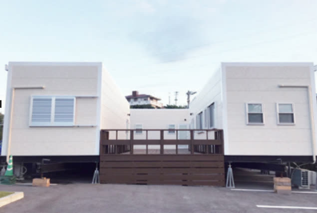
複数のトレーラーハウスは連結させないこと
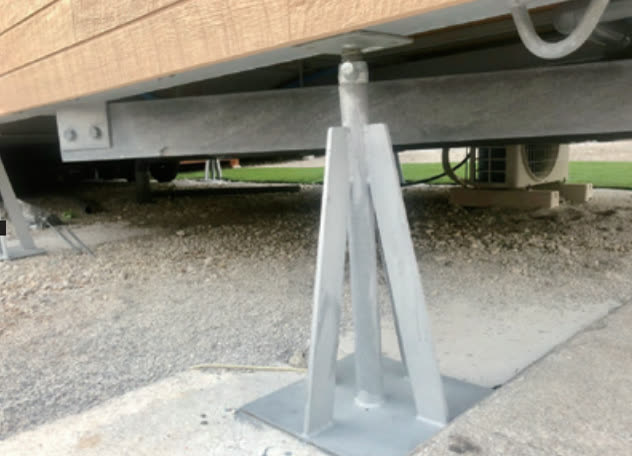
専用ジャッキ等は工具を用いずに外せること
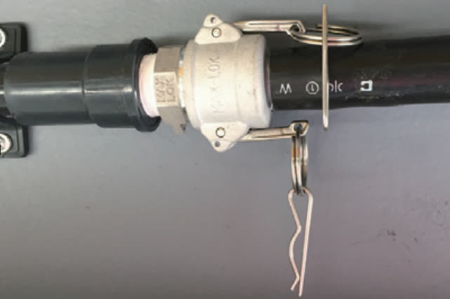
給水の接続配管が工具を用いずに着脱できること
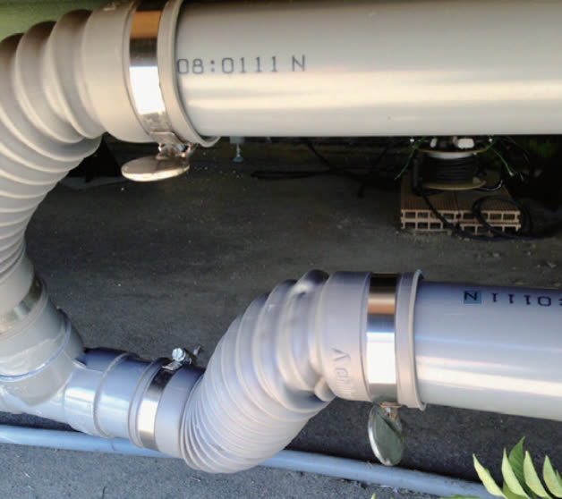
排水の接続配管が工具を用いずに着脱できること
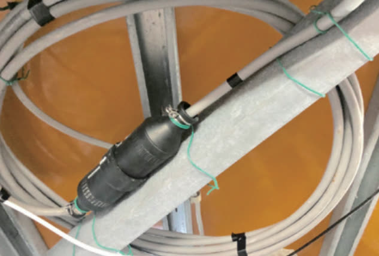
電気の接続方法が工具を用いずに着脱できること
通信はケーブルレスで使用すること ホームルーターとIP通信（インターネット回線）を活用します。
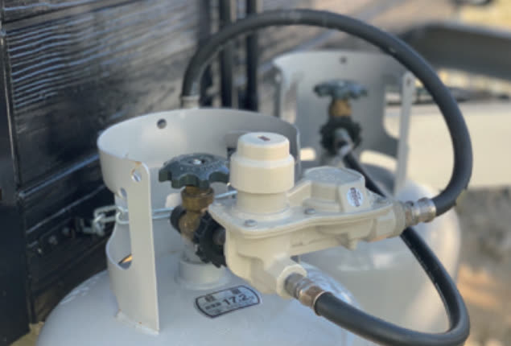
プロパンガスのガスボンベがパイプレンチで簡単に着脱できること
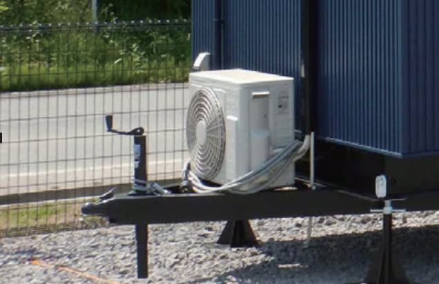
エアコン等の室外機がトレーラーハウスの走行に支障がないこと
Standard
総則・定義における、トレーラーハウスの取扱いに関する条文です。
トレーラーハウス（機動装置を備えない車両で、自動車等により目的地まで牽引し、住宅・事務所・店舗等として使用するもの（屋内的用途と認められるもの））のうち、 次のいずれかに該当するものは、法第2条第1号の建築物として取り扱うものとする。
なお、設置時点では建築物に該当しない場合であっても、その後の維持管理の結果として次のいずれかに該当するに至った場合には、その時点から建築物として扱う。
廃バスを屋内的用途として使用していると認められるもので、土地に定着（随時かつ任意に移動できるものを除く）しているもの、 又は本文2（ライフラインの配線配管）に該当するものについては建築物とする。
なお、バスとは、道路運送車両法第3条に規定する普通自動車であって、11人乗り以上のものであり、 これを道路運送車両法第15条の規定により抹消登録したのが廃バスである。
大分類：総則 ／ 中分類：定義 ／ 小分類：トレーラーハウス — 法第2条
本文1中「移動に支障のある」ものには、次のものも該当する。
関連：昭和62年 例規第419号
平成9年 通達第170号
平成14年 日本建築行政会議基準 総則 P14
Membership
トレーラーハウスの製造・販売・設置・運営に携わる事業者の方、 また導入をご検討中の方からのご相談を受け付けています。
13項目の検査基準と、その運用の考え方を共有します。設置前の確認から相談いただけます。
建築基準法・道路運送車両法まわりの通知や、市町村ごとの運用の違いについて情報提供します。
設置状況の確認や、基準を満たしていない場合の改善について、協会として指導・助言を行います。
入会条件・会費等の詳細は、お問い合わせいただいた際に個別にご案内しております。 まずはお気軽にご相談ください。
会員事業者の一覧は現在準備中です
掲載をご希望の会員様は、お問い合わせよりご連絡ください。